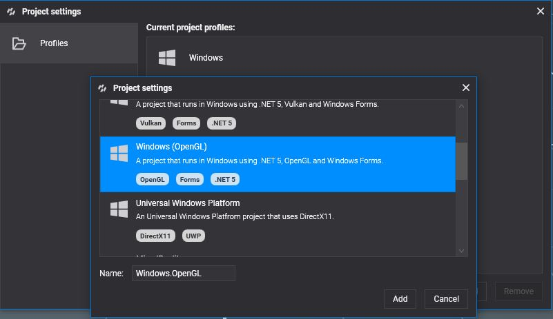
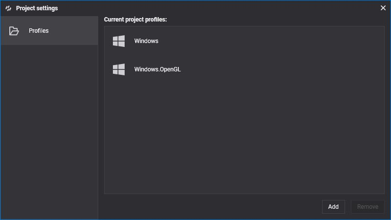
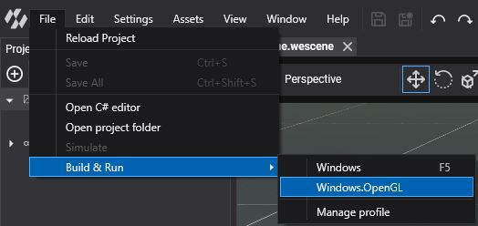
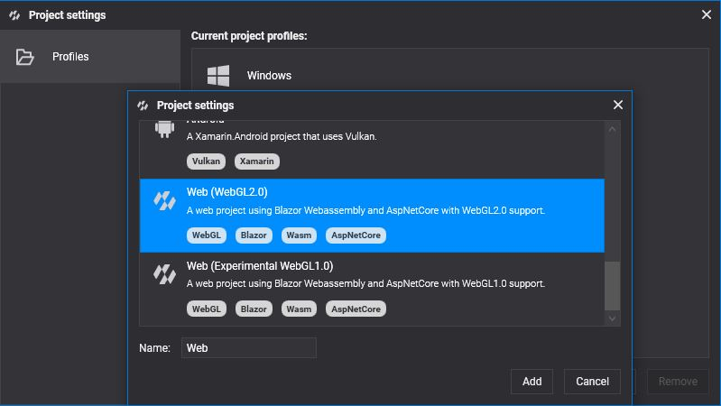

OpenGL
OpenGL is the veteran cross-platform graphics API of the Khronos Group. Evergine uses it in two forms:
- WebGL 2, the OpenGL ES 3.0 based API of web browsers, is the default backend for the web: the Web, React SPA and WebXR templates use it.
- Desktop OpenGL on Windows, through the Windows (OpenGL) template.
OpenGL does not support compute shaders in Evergine, so features built on them, such as GPU particles and most post-processing effects, are not available. For new desktop work prefer DirectX 12 or Vulkan; for the web, consider WebGPU.
Supported devices
- Current Chrome, Edge, Firefox and Safari browsers on desktop and mobile (WebGL 2).
- Windows 10 and 11 PCs (OpenGL).
Check your OpenGL version
On Windows, OpenGL comes with the graphics driver; the OpenGL Hardware Capability Viewer shows the version it supports. For browsers, caniuse.com/webgl2 shows WebGL 2 support.
Create a graphics context
GraphicsContext graphicsContext = new Evergine.OpenGL.GLGraphicsContext();
graphicsContext.CreateDevice();
For WebGL 2, pass the backend explicitly:
GraphicsContext graphicsContext = new Evergine.OpenGL.GLGraphicsContext(GraphicsBackend.WebGL2);
graphicsContext.CreateDevice();
Build & Run
Desktop
Add a profile with the Windows (OpenGL) template from Settings > Project Settings (see DirectX 12 for the steps):


Then run it from File > Build & Run > Windows.OpenGL:

Web
Add a profile with the Web (WebGL2.0) template to target browsers with WebGL 2:
